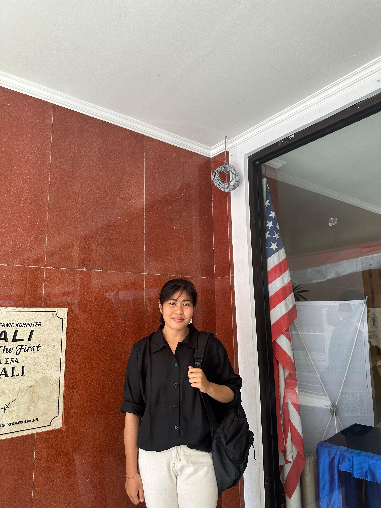
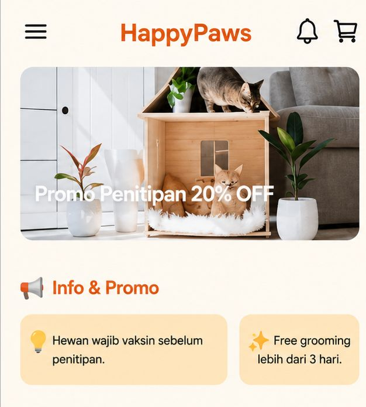
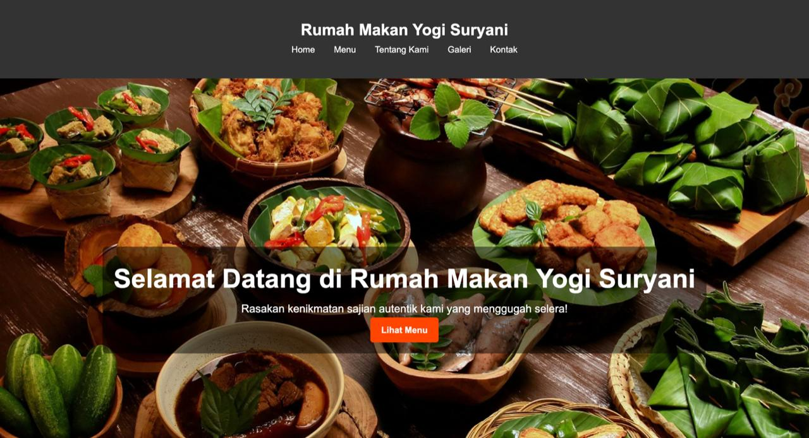
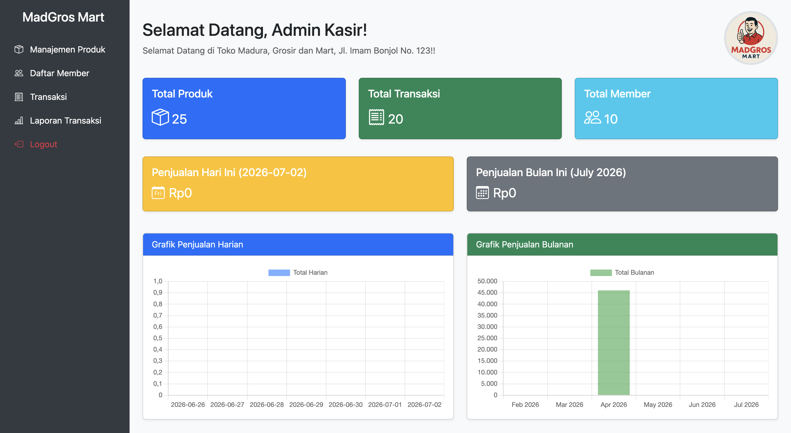
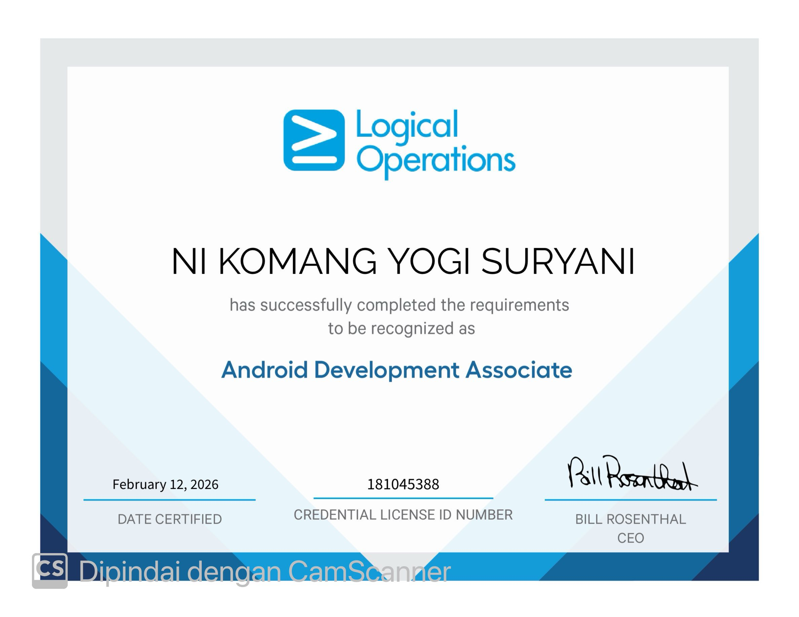
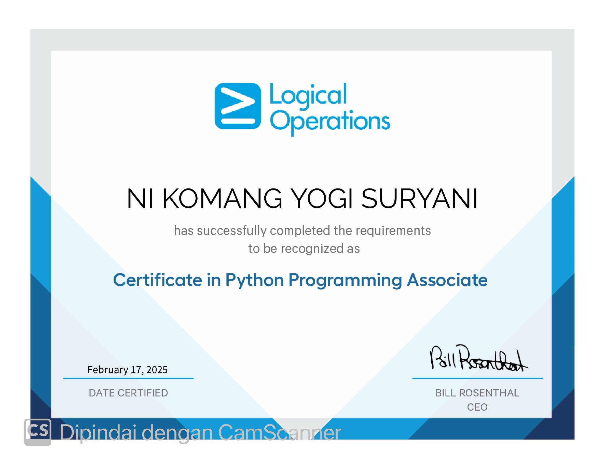
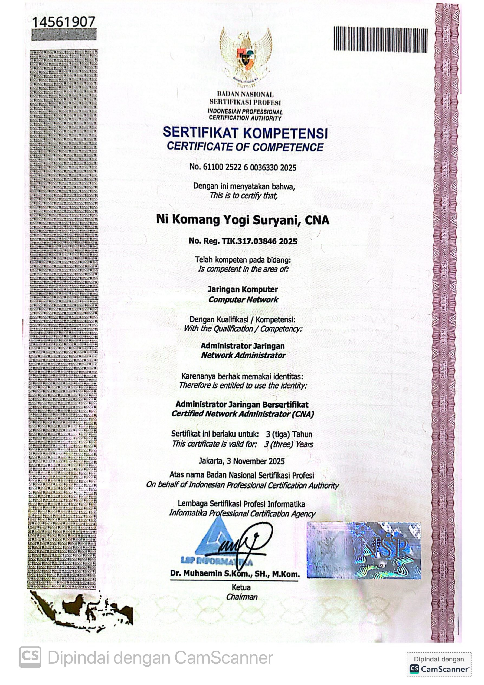
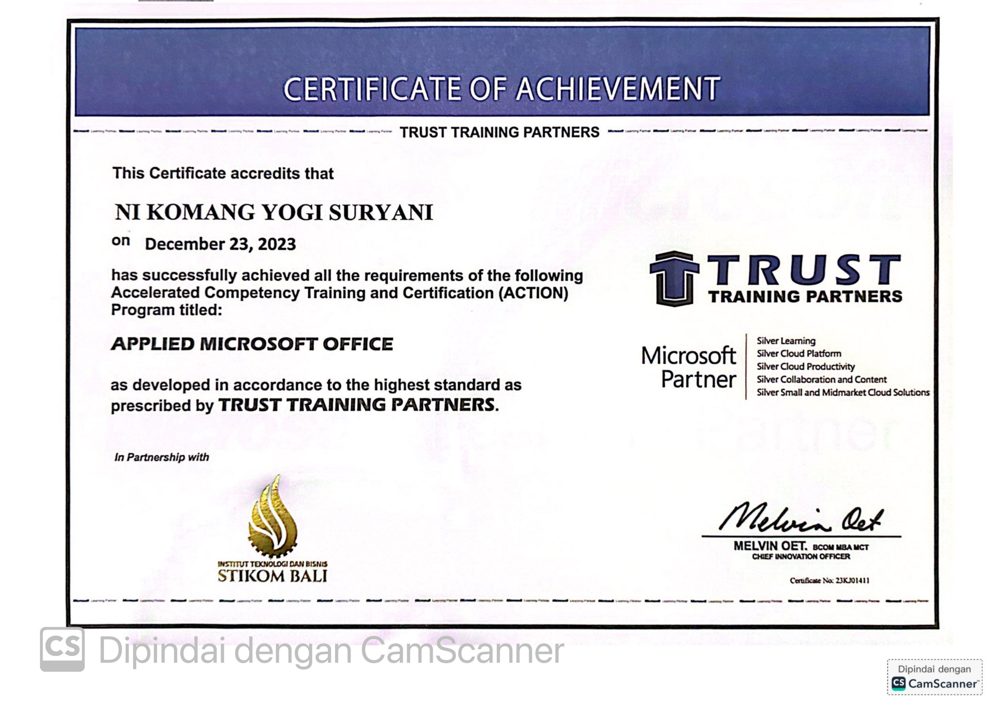

Website
Ngopi yuk!
Website promosi café modern dengan tampilan responsif.
Saya adalah mahasiswa aktif program studi Teknologi Informasi yang memiliki motivasi tinggi, teliti, dan berorientasi pada hasil. Memiliki pengalaman dalam pengelolaan data, administrasi dokumen, pembuatan laporan, serta pengembangan website dasar. Mampu bekerja secara efektif dalam lingkungan yang dinamis, cepat beradaptasi terhadap tantangan baru, serta menjaga ketelitian dalam bekerja. Memiliki kemampuan komunikasi, kerja sama tim, dan tanggung jawab yang baik untuk mendukung perkembangan profesional dan perusahaan.

Saya memiliki minat dalam bidang Web Development dan saat ini saya sedang mendalami pengembangan Front-End dan Back-End menggunakan HTML, CSS, JavaScript, PHP, dan MySQL. Selain itu, saya juga mengembangkan kemampuan dalam desain UI/UX menggunakan Figma serta pengelolaan database. Saya bercita-cita menjadi seorang Web Developer profesional yang mampu menciptakan solusi digital yang inovatif, responsif, dan bermanfaat.
Ni Komang Yogi Suryani
ITB STIKOM Bali
Jl. Yeh Pulu, Blahbatuh, Gianyar, Bali
Web Developer
Website promosi café modern dengan tampilan responsif.

React Native aplikasi penitipan dan grooming hewan.

Website restoran dengan desain modern yang responsif.

Sistem Point of Sales Modern berbasis website.
Website management, WordPress, SEO, dan Digital Marketing.
Mengelola administrasi, data tamu dan laporan operasional.
sertifikasi Desktop Office Training, Pemrograman Python, serta Networking untuk memperkuat kompetensi di bidang teknologi informasi.
Aktif mengikuti organisasi dan kegiatan sekolah.
Mengelola anggaran organisasi, laporan keuangan dan administrasi.
Mengatur anggaran acara, pengeluaran dan laporan pertanggungjawaban.




Sertifikat ini diperoleh sebagai bukti kompetensi dan kemampuan yang telah saya pelajari melalui pelatihan maupun sertifikasi.